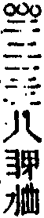

嘉興大藏經 第39冊
No.B441 萬峰童真禪師語錄 (6卷)
【清 至善說 德林記（依駒本印）】
第 6 卷
萬峰童真和尚湘山頌古卷下
睦州問一秀才聞先輩會二十四家書法是否才曰不敢州以拄杖空中點云會麼才云不會州云秪這一點尚不會說甚麼二十四家書法。
身在海中休覓水日行嶺上莫尋山夾山在此三十載病入膏肓也大難也大難拈來只見玉珊珊。
藥山參石頭問三乘十二分教某甲粗知嘗聞南方直指人心見性成佛實未明了乞師慈悲指示頭云恁麼也不得不恁麼也不得恁麼不恁麼總不得山不領悟頭云子因緣不在此且往江西馬大師處去山到馬祖處亦如前問祖云我有時教伊揚眉瞬目有時不教伊揚眉瞬目有時教伊揚眉瞬目者是有時教伊揚眉瞬目者不是山於是有省。
東西非異戶作用有殊方我唱陽春調君吟白雪腔雲留芳樹晚峰落遠天長踏轉舊時路星殘入曉霜。
靈樹因僧問如何是祖師西來意樹默然後門人欲選此語上碑乃問雲門先師默然處如何上碑門云師。
定上座參臨濟問如何是佛法大意濟下禪床擒住打一掌便拓開定佇立傍僧云定上座何不禮拜定纔作禮忽然大悟。
洞山與泰首座喫果子次乃問有一物上拄天下拄地黑似漆嘗在動用中動用中收不得且道過在甚麼處泰曰過在動用中山喚侍者掇退果棹。
洞山因僧問寒暑到來如何迴避山云何不向無寒暑處去曰如何是無寒暑處山曰寒時寒殺闍黎熱時熱殺闍黎。
漸源侍道吾往一家弔慰源撫棺曰生耶死耶吾曰生也不道死也不道源曰為甚麼不道吾曰不道不道歸至中路源曰和尚今日若不與某甲道打和尚去也吾曰打即任打道即不道源便打後造石霜霜曰前來打先師因緣會也未源曰卻請和尚道一轉語霜曰不見道生也不道死也不道源遂禮拜設齋懺悔他日持鍬於法堂上從東過西從西過東霜曰作甚麼源曰覓先師靈骨霜曰洪波浩渺白浪滔天覓甚先師靈骨源曰正好著力霜曰這裏針劄不入著甚麼力源持鍬肩上便行。
漸源不透死生關卻要先師露一線不知大開東閣門奈何苦苦求方便後來饒舌是石霜白浪洪波看不見看不見先師面目方纔驗。
夾山因僧問如何是夾山境山曰猿抱子歸青嶂外鳥啣花落碧嵒前法眼云我二十年只作境話會。
投子因僧問月未圓時如何子曰吞卻三箇四箇曰圓後如何子曰吐卻七箇八箇。
投子因僧問曹溪如指月靈山如畫月如何是真月子曰昨夜三更轉向西。
仰山住東平時溈山令僧送書并鏡仰提起示眾曰且道是溈山鏡東平鏡若道是東平鏡又是溈山送來若道是溈山鏡又在東平手裏道得則留取道不得即撲碎去也眾無語遂撲破。
仰山侍溈山遊山忽鴉啣一紅柿落在面前仰取柿拭過呈溈山山云子甚處得來仰曰此是和尚道德所感溈云汝也不得無分即分半與仰。
仰山問溈山大用現前請師辨白溈下座歸方丈仰隨入溈問子適來問甚麼話仰再舉溈曰還記得吾答語否仰曰記得溈曰你試舉看仰珍重出去溈曰錯仰回首曰閑師弟若來莫道某甲無語。
仰山問僧近離甚處曰廬山山曰曾到五老峰麼曰不曾到山曰闍黎不曾遊山雲門云此語皆為慈悲之故有落艸之談。
德山到溈山挾複子於法堂上從西過東從東過西顧視云無無便出至門首卻云也不得艸艸復具威儀重入相見溈山坐次德提起坐具云和尚溈擬取拂子德便喝拂袖而出背卻法堂著艸鞋便行溈至晚問首座適來新到在甚麼處座云當時背卻法堂著艸鞋去也溈云此子已後向孤峰頂上盤結艸菴呵佛罵祖去在。
丹霞過慧林寺遇天大寒取木佛燒向院主呵曰何得燒我佛霞以杖子撥灰曰吾燒取舍利主曰木佛何有舍利霞曰既無舍利更取兩尊燒主自後眉鬚墮落。
德山凡見僧入門便棒。
臨濟凡見僧來纔入門便喝。
仰山問三聖汝名甚麼聖云慧寂山曰慧寂是我聖云我名慧然山呵呵大笑。
君臨敝邑我蒞仙鄉易子而教蓋古之嘗。
仰山因僧問法身還解說法否山曰我說不得別有一人說得曰說得底人在甚麼處山推枕子為山聞得曰寂子用劍刃上事。
仰山夏末問訊溈山溈曰子一夏在下面作何所務仰曰慧寂鋤得一片畬下得一籮粟溈曰子今夏不虛過仰卻問和尚一夏之中作何所務溈曰日中一食夜後一寢仰曰和尚今夏亦不虛過。
木平初參洛浦問一漚未發已前如何辨其水脈浦曰移舟諳水脈舉棹即迷源平從此悟入。
僧問雲門如何是清淨法身門云花藥欄。
仰山指雪獅子問還有過此色者麼雲門云當時但與推倒雪竇云雲門只解推倒不解扶起。
香嚴參溈山溈問我聞你在先師處問一答十問十答百此是汝聰明伶俐意解識想生死根本父母未生時試道一句看嚴茫然歸寮將平日看過底文字尋一句酬對竟不得乃歎曰畫餅不可充饑遂焚平昔所看文字抵南陽忠國師遺跡憩止一日芟除艸木偶拋瓦擊竹作聲忽然省悟述偈曰一擊亡所知更不假修持動容揚古路不墮悄然機處處無蹤跡聲色外威儀諸方達道者咸言上上機。
香嚴初開堂溈山令人送書并拄杖至嚴接得便哭蒼天蒼天僧曰和尚為甚如此嚴曰秪為春行秋令。
米胡令僧問仰山今時人還假悟否仰曰悟即不無爭奈落第二頭何胡深肯之。
米胡問僧近離甚麼僧曰藥山胡曰藥山老子近日如何曰大似一片頑石胡曰得恁麼鄭重曰也無你提掇處胡曰非但藥山米胡也恁麼僧近前顧視而立胡曰看看頑石動也。
興化到大覺為院主一日覺喚院主我聞你道向南方行腳一遭拄杖頭不曾撥著一箇會佛法底你憑箇甚麼道理與麼道化便喝覺便打化又喝覺又打化來日從法堂過覺召院主我直下疑你昨日這兩喝化又喝覺又打化再喝覺亦打化曰某甲於三聖師兄處學得箇賓主句總被師兄折倒了也願與某甲箇安樂法門覺曰這瞎漢來這裏納敗闕脫下衲衣痛打一頓化於言下薦得臨濟先師於黃檗處喫棒底道理化後開堂日拈香曰此一瓣香本為三聖師兄三聖與我太孤本為大覺師兄大覺與我太奢不如供養臨濟先師。
僧問興化四方八面來時如何化云打中間底僧便禮拜化曰昨日赴箇村齋中途遇一陣卒風暴雨卻向古廟裏躲得過。
香嚴示眾若論此事如人上樹口啣樹枝腳不踏樹手不攀枝樹下忽有人問如何是祖師西來意不對他又違他所問若對他又喪身失命當恁麼時作麼生即得時有虎頭上座出云樹上道即不問未上樹時請和尚道嚴乃呵呵大笑。
香嚴因僧問如何是道曰枯木裏龍吟僧云如何是道中人曰髑髏裏眼睛僧後問石霜如何是枯木裏龍吟霜曰猶帶喜在如何是髑髏裏眼睛霜曰猶帶識在。
興化示眾我聞長廊下也喝後架裏也喝諸人莫盲喝亂喝直饒喝得興化向虛空裏卻撲下來一點氣也無待我蘇息起來向汝道未在何故我未曾向紫羅帳裏撒珍珠與汝諸人去在胡喝亂喝作麼。
鎮州蘿蔔頭親言出親口趙州北地人親見南泉後。
三聖上堂云我逢人則出出則不為人 興化云我逢人則不出出則便為人。
一箇起家白屋一箇出自高門十字街頭撞著原是漢魏周秦水程三十里陸程一朝登行到碧梧金井處水綠山青。
三聖到德山纔展坐具山曰莫展炊巾此處無殘羹餿飯聖曰縱有也無著處山便打聖接住棒推向禪床上山大笑聖哭蒼天便下參堂堂中首座號踢天泰問行腳高士須得本道公驗作麼生是本道公驗聖曰道甚麼座再問聖打一坐具曰這漆桶前後觸忤多少賢良座擬人事聖便▆第二位人事。
壯士臨場不費纖力犯堊揮斤手親眼疾塞北風寒霜氣重江南天險水聲急細看煙塵各有界其間操縱誰辨的誰辨的作者須從轉處悉。
興化見同參來纔上法堂化便喝僧亦喝化又喝僧亦喝化近前拈棒僧又喝化曰你看這瞎漢猶作主在僧擬議化直打下法堂侍者請問適來那僧有甚觸忤和尚化曰他適來也有權也有賓也有照也有用及乎我將手向伊面前橫兩橫到這裏卻去不得似這般瞎漢不打更待何時侍禮拜。
玄沙上堂聞燕子聲沙云深譚實相歸方丈。
石霜因僧自洞山來問和尚有何言句示徒僧曰解夏上堂秋初夏末兄弟或東去西去直須向萬里無寸艸處去良久云秪如萬里無寸艸處作麼生去霜曰有人下語否曰無霜曰何不道出門便是艸。
萬里無寸艸秋空須靠倒出門便是艸客路行人少蘆花洲上月明前祝融峰頭日初小日初小埜渡無人舟自杳爭如一覺到天光衲被蒙頭全不曉。
臨濟問黃檗佛法的的大意三度問三度被打不領深旨且辭去檗曰秪往高安灘頭參大愚去濟到大愚愚曰甚處來曰黃檗來愚曰黃檗有何言句曰某甲三度問佛法的的大意三度被打不知有過無過愚曰黃檗與麼老婆心切為汝得徹因更來這裏問有過無過濟於言下大悟曰原來黃檗佛法無多子愚搊住曰這尿床鬼子適來道有過無過如今卻道佛法無多子你見箇甚麼道理速道速道濟於大愚脅下築三拳愚拓開曰汝師黃檗非干我事濟辭大愚卻回黃檗檗見便問這漢來來去去有甚了日濟曰秪為老婆心切便人事了侍立檗問甚處來濟曰昨蒙和尚令參大愚去來檗曰大愚有何言句濟舉前話檗曰大愚老漢饒舌待來痛與一頓濟曰說甚待來即今便打隨後便掌檗喚侍者引這風顛漢參堂去。
一隻破棺材扶來又扶去兩處失便宜家親釀成祟。
徑山問僧我前日有一問在你處你先前日答了我也即今因甚麼瞌睡僧云如是如是山云道甚麼僧云不是不是山連打兩棒云一棒打你如是一棒打你不是。
無著往五臺華嚴寺至金剛窟禮謁遇老翁牽牛行邀入寺翁曰近自何來著曰南方曰南方佛法如何住持著曰未法比丘少奉戒律曰多少眾著曰或三百或五百著卻問此間佛法如何住持曰龍蛇混雜凡聖交參著曰多少眾曰前三三後三三日晚翁令童子相送著問童子前三三後三三是多少童召大德著應諾童曰是多少著復問此為何處曰金剛窟般若寺也著悽然悟彼翁者文殊也。
明招上堂眾集定招云這裏風頭稍硬且歸暖▆商量便歸方丈眾隨至立定招云纔到暖室便見瞌睡以拄杖一時趁散。
左至右前至後花言巧語將人誘老來無力下禪床不顧面皮多少厚多少厚請看白雲堆滿岫。
臨濟示滅謂眾云吾滅後不得滅卻吾正法眼藏三聖出曰爭敢滅卻和尚正法眼藏濟曰已後有人問你向他道甚麼聖便喝濟曰誰知吾正法眼藏向這瞎驢邊滅卻。
雪峰住菴時有兩僧來峰以兩手拓菴門放身出曰是甚麼僧亦曰是甚麼峰低頭歸菴僧辭往▆南峰曰我有箇同參住巖頭附汝一書曰某書上師兄某自鼇山成道後迄至於今飽不饑同參某書上僧到巖頭達書了頭問別有何言句曾遂舉前話頭曰他道甚麼曰他無語低頭歸菴頭曰噫我當初悔不向伊道末後句若向伊道天下人不奈伊何僧至夏末請益前話頭曰何不蚤問曰未敢容易頭曰雪峰與我同條生不與我同條死要識末後句秪這是。
末後句話難委同條生不同條死千里書通舊面來▆示當陽空露齒而今拋向楚山頭無限惡風吹不起。
雪峰上堂南山有一條鱉鼻蛇汝等諸人切須好看長慶出曰今日堂中大有人喪身失命雲門以拄杖攛向峰前作怕勢有僧舉似玄沙沙曰須是我稜兄始得然雖如是我則不然曰和尚作麼生沙曰用南山作麼。
洛浦一日上堂云孫臏收舖去也有買卜底出來時有僧出云請和尚卜浦云汝家爺死 法眼代撫掌三下。
九峰因石霜遷化眾請首座住持峰時為侍者白眾問首座曰先師道休去歇去冷湫湫地去一條白練去古廟香爐去一念萬年去明甚麼邊事會得即住持會不得不可首座對曰明一色邊事峰曰與麼則不會先師意在座曰但裝香來香旌斷處若去不得即不會先師意遂焚香煙未斷座已脫去峰撫背曰坐脫立亡即不無先師意未夢見在。
雲蓋因僧問石霜萬戶俱閉即不問萬戶俱開時如何霜曰堂中事作麼生僧無對經半載方始下一轉語曰無人接得渠霜曰道即道得八程曰和尚又且如何霜曰無人識得渠蓋聞乃禮拜乞為舉霜不肯蓋乃抱霜上方丈曰和尚若不道打和尚去在霜曰得在蓋乃禮拜霜曰無人識得渠蓋頓首有省。
巖頭參德山纔跨門便問是凡是聖山便喝頭禮拜有舉似洞山山曰若不是奯公大難承當頭曰洞山老人不識好惡錯下名言我當時一手抬一手捺。
巖頭值沙汰於鄂渚邊作渡子一日有婆抱一孩兒來乃曰呈橈舞棹即不問且道婆手中兒甚處得來頭便打婆曰婆生七子六箇不遇知音秪這一箇也不消得便拋向水中。
雪峰一日登座召眾曰看看東邊底又曰看看西邊底汝若要會拈拄杖曰向這裏會取。
雲門因僧問如何是一代時教門云對一說。
諸佛無可說而曰對一說一塊紫金山白晝被人鑿。
百丈再參馬祖侍立次祖目視繩床角拂子丈曰即此用離此用祖曰汝已後開兩片皮將何為人丈取拂子豎起祖曰即此用離此用丈掛拂子於舊處祖震威一喝丈直得三日耳聾後黃檗聞舉不覺吐舌丈曰子已後莫承事馬祖去麼檗曰不然今日因師舉得見馬祖大機之用然且不識馬祖若嗣馬祖已後喪我兒孫丈曰如是如是見與師齊減師半德見過於師方堪傳授子甚有超師之見檗便禮拜。
石霜冬日榜僧堂作此字其下註曰若人識得不離四威儀中首座見曰和尚今日放參。
打地和尚凡有人來問以棒打地示之一日被僧藏卻棒然後致問尚但張口而已。
作賊人心虛見人便驚顧饒君下下來不自知落處。
楞嚴七處徵心。
八還辨見。
經題八(五首)。
是法非思量睜眼入鑊湯打破大唐國擺手見空王當頭忽漏逗肝膽盡掀開釋迦與彌勒仰首朢將來三藏十二部盡是下頭註歷代老禿奴鈔外更加疏正是鐵蒺藜光明貫今昔拋在眾人前兩手撈不及揭開摩醯眼爾乃見端由昨夜一聲雁驚起後池秋。
圓覺經一切障礙即究竟覺。
牛欄馬廄淨土天堂稍存擬議便是荒唐。
南陽忠國師因西天大耳三藏到京云得他心通帝命師試驗師問汝得他心通那對曰不敢師曰汝道老僧即今在甚麼處曰和尚是一國之師何得卻去西川看競渡良久再問汝道老僧即今在甚麼處曰和尚是一國之師何得卻在天津橋上看弄猢猻師良久復問汝道老僧即今在甚麼處藏罔測師叱曰這埜狐精他心通在甚麼處。
雲門云光不透脫有兩般病一切處不明面前有物是一又透得一切法空隱隱地似有箇物相似亦是光不透脫又法身亦有兩般病得到法身為法執不忘己見猶存坐在法身邊是一直饒透得法身去放過即不可仔細檢點將來有甚麼氣息亦是病。
雲門上堂乾坤之內宇宙之間中有一寶祕在形山拈燈籠向佛殿裏將三門來燈籠上。
雪峰示眾三世諸佛向火燄上轉大法輪玄沙云近來王令稍嚴峰曰作麼生沙曰不許▆行奪市峰不覺吐舌雲門曰火燄為三世諸佛說法三世諸佛立地聽。
楞嚴汝等一人發真歸元此十方空悉皆銷殞。
一人發真歸元冷灰爆出一豆拈來置在人前可作大明神咒不勞蚤暮受持自然色色仍舊。
曹山因僧問學人抱璞投師請師雕琢山曰不雕琢曰為甚麼不雕琢山曰須知曹山好手。
曹山因鏡清問心徑苔生時如何山曰難得道者曰未審此人向甚處去山曰只知心徑苔生不知向甚麼處去。
雪峰與玄沙夾籬次沙曰夾籬處還有佛法也無峰曰有曰如何是夾籬處佛法峰撼籬一下沙曰某甲不與麼峰曰子又作麼生曰穿過篾來。
金剛經若為人輕賤是人先世罪業應墮惡道以今世人輕賤故先世罪即為消滅。
德山嘗講金剛經時謂之周金剛後聞南方禪席頗盛遂擔青龍疏鈔出蜀至灃陽路上見一婆子賣餅因息肩買餅點心婆指擔曰這箇是甚麼文字山曰青龍疏鈔婆曰講何經山曰金剛婆曰我有一問你若答得施與點心若答不得且別處去金剛經道過去心不可得現在心不可得未來心不可得未審上座點那箇心山無語遂往龍潭到法堂曰久嚮龍潭及乎到來潭又不見龍又不現潭引身曰子親到龍潭山無語遂親止焉一夕侍立次潭曰更深何不下去山珍重便出卻回曰外面黑潭點紙燭度與山山擬接潭復吹滅山於此大悟。
聚雲真和尚因僧問如何是當機一句雲打云速道速道僧擬議雲直打出。
曹山因僧問朗月當空時如何山曰猶是階下漢曰請師接上階山曰月落後相見。
雲居因僧問如何是沙門所重居曰心識不到處。
心識不到處澗水響潺潺秪許雙崖聽貧而無怨難。
趙州因僧問如何是祖師西來意州云庭前柏樹子僧云和尚莫將境示人州云我不將境示人僧云如何是祖師西來意州云庭前柏樹子。
清平初參翠微便問如何是西來的的意微曰待無人即向汝說平良久曰無人也請和尚說微下禪床引入竹園平又曰無人也請和尚說微指竹曰這竿得恁麼長那竿得恁麼短平後住大通舉謂眾曰先師入泥入水為我自是我不識好惡。
龍牙因僧問二鼠侵藤時如何曰須有隱身處始得曰如何是隱身處牙曰還見儂家麼。
雲門云直得乾坤大地無纖毫過患猶是轉句不見一色始是半提更須知有全提時節。
一勘破二話墮一簇破來能幾箇全提時節只甚閒飯餘正好伸腳臥伸腳臥三腳驢子空裏磨。
子湖因僧問自古上賢還達真正理也無湖曰達曰真正理作麼達湖曰霍光賣假銀城與單于契書是甚麼人作。
楞嚴經吾不見時何不見吾不見之處若見不見自然非彼不見之相若不見吾不見之地自然非物云何非汝。
圓明了知土塊泥沙稍存擬議海角天涯。
大小瞿曇一場納敗拈示人前不倒自壞。
若能轉物即同如來。
若能轉物即同如來吹糠見米只欠簸篩。
若能轉物即同如來大的人偷小的卻在。
南泉問僧夜來好風僧云夜來好風泉云吹折門前一株松次問一僧云夜來好風僧云是甚麼風泉云吹折門前一株松僧云是甚麼松泉云一得一失。
歸宗入園取菜次乃畫一圓相圍卻一株語眾曰不得動著這箇眾不敢動少頃宗復來見菜猶在便以棒趁眾僧這一隊漢無一箇有智慧底。
乾峰上堂舉一不得舉二放過一著落在第二雲門出眾云昨日有人從天台來卻往徑山去峰曰典座來日不得普請。
乾峰上堂法身有三種病二種光須是一一透得始解歸家穩坐須知更有向上一竅在雲門出問菴內人為甚麼不知菴外事峰呵呵大笑門曰猶是某甲疑處峰云子是甚麼心行門曰也要和尚相委峰曰直須恁麼始得穩坐門應諾。
三目芝和尚有講主來參問離名離相以何為宗芝曰蟭螟眼裏推不輥主云學人不會芝曰螃蟹腔中好汎船。
南院上堂諸方秪具啐啄同時眼不具啐啄同時用僧便問如何是啐啄同時用院曰作家不啐啄啐啄同時失曰此猶是某甲問處院曰汝問處作麼生僧曰失院便打其僧不肯後於雲門會下聞二僧舉此話一僧曰當時南院棒折那僧忽契悟奔回省覲院已圓寂乃謁風穴穴見便問莫是當時問先師啐啄同時話底麼僧曰是穴曰汝當時作麼生會曰某甲當時如在燈影裏行相似穴曰汝會也。
疏山因主事僧為造壽塔畢白山山曰將多少錢與匠人曰一切在和尚山曰為將三錢與匠人為將兩錢與匠人為將一錢與匠人若道得與吾親造壽塔來僧無語後僧舉似大嶺嶺曰汝歸與疏山道若將三錢與匠人和尚此生決不得塔若將兩錢與匠人和尚與匠人共出隻手若將一錢與匠人累他匠人眉鬚墮落僧回舉似疏山山具威儀朢大嶺作禮曰大嶺有古佛放光射到此間雖然如是也是臘月蓮花大嶺後聞此語曰我恁麼道蚤已龜毛長數丈。
盤山道向上一路千聖不傳慈明道向上一路千聖不然徑山道向上一路熱碗鳴聲。
僧問趙州學人乍入叢林乞師指示州云喫粥也未僧云喫粥了也州云洗缽盂去僧於言下有省。
聚雲上堂出眾者三十棒不出眾者三十棒出眾不出眾三十棒一僧出問話不契乃曰直下三玄已露何曾三要無施落花流水空去殿前古柏當機。
僧問雲門如何是超佛越祖之譚門云餬餅。
淡淡春山盈盈秋水不用安排何彼何此餬餅云超佛祖譚千峰勢到嶽邊止。
慶忠機和尚上堂雲從龍風從虎聖人作而萬物睹本乎天者親上上律天時本乎地者親下下襲水土土能生金金主三六九九九八十一一歸何處卓一卓云蘇盧悉哩娑婆訶。
塞壑填溝堆山積嶽玅閶闈而洞開斂曠世之弘略承平也天蓋地擎建掃也雲行雨作神龍變化見飛騰其間操縱難描摸。
慶忠因一官人請上堂擊禪床云起去拂一拂云伺候著良久云隙晷偷光杖兔角星芒射眼拂龜毛不是山僧行正令崑崙叫屈舜若逃喝一喝云畫供打口鼓喝退堂聲下座。
慶忠上堂貴買硃砂畫月打牛打車不別憎檻欣籠奈何磨磚作鏡爭得鳧脛天然不長截鶴續之則疾召大眾云且道阿膩吒峰今日有幾人作舞。
僧問九峰如何是頭峰云開眼不覺曉僧云如何是尾峰云不坐萬年床僧云有頭無尾時如何峰云終是不貴僧云有尾無頭時如何峰云雖飽無力僧云直得頭尾相稱時如何峰云兒孫得力祖父不知。
洛浦參夾山不禮拜當面而立山云雞栖鳳巢非其同類出去浦云自遠趍風乞師一接山云目前無闍黎此間無老僧浦便喝山云住住且莫艸艸匆匆雲月是同溪山各異截斷天下人舌頭即不無闍黎爭教無舌人解語浦無語山便打浦從此服膺。
一手抬一手挽見兔放鷹隨後趕十面埋伏會也無馬到烏江人自罕人自罕成功只在一聲喊。
溈山五峰雲嵒侍立百丈次丈問屏卻咽喉唇吻道將一句來溈云卻請和尚道丈曰不辭向汝道恐已後喪我兒孫問五峰峰云和尚有也未丈曰無人處斫額朢汝問雲嵒嵒云和尚也須屏卻丈曰喪我兒孫。
卻請和尚道騰身直上巍峰表殘雲夜捲霜海空百億山河齊失照和尚有也未馳書恨不通宮內五花六綠付丹青描得十成終不似和尚也屏卻虎符為甚都拋卻欲奪渠家十萬師臨場且看君之略。